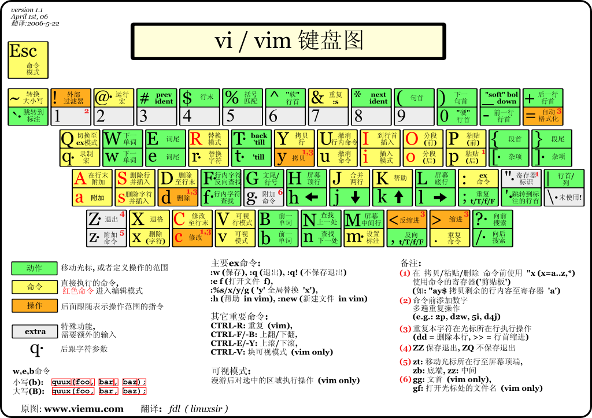

Vim 分为命令模式（普通模式）、输入模式、底线命令模式、可视化模式，每种模式都有对应的操作。下文如无特别说明，命令都在普通模式下执行；以
:开头的命令在底线命令模式下执行。

一、几种模式
| 模式 | 进入方式 | 退出方式 | 用途 |
|---|---|---|---|
| 命令模式（普通模式） | 打开文件后默认进入 | 按 i/a/v/: 切到其他模式 |
移动光标、删除、复制、执行普通命令 |
| 输入模式（插入模式） | i 光标前插入、a 光标后插入、o 下一行插入 |
Esc |
输入文本 |
| 底线命令模式（末行模式） | 普通模式下按 :（/、? 也可） |
Esc 或命令执行完自动返回 |
保存、退出、替换、设置选项 |
| 可视化模式 | v 字符、V 行、Ctrl+v 块 |
Esc |
选中区域后统一操作 |
普通模式下最常用的几个：
dw：删除光标后的一个单词；bdw是复合命令，先把光标移到单词首，再执行dwx：删除光标所在字符u：撤销r：替换光标所在字符，按r后再输入替换字符10,100>：第 10 行到第 100 行整体缩进，反向缩进是<
可视化模式下：
v进入字符可视化：w选中到下一个单词开头，$选中该行其余部分，u/U大小写转换V进入行可视化Ctrl+v进入块可视化
二、光标移动
1. 单词间移动
| 命令 | 作用 |
|---|---|
w |
移到下一个单词的词首（连续标点算一个单词） |
W |
同上，但只以空格作为分隔 |
e |
移到当前/下一个单词的词尾（含标点） |
E |
同上，但只以空格作为分隔 |
b |
移到上一个单词的词首 |
B |
同上，但只以空格作为分隔 |
4w、4b、4e |
一次移动 4 个单词 |
w 与 W 的区别（用 8w 和 8W 对比可见差异）：
1 | Hello everyone, My name is panda, I'm from China, I love Bamboo. |
2. 行内移动
| 命令 | 作用 |
|---|---|
0 |
移到行首第一列（包含空格） |
^ |
移到行首第一个非空字符，即非空格行首 |
$ |
移到行尾 |
+ |
移到下一行行首（非空格处） |
- |
移到上一行行首（非空格处） |
10j、10l |
一次移动多个字符，如向左移动 10 个字符 |
上下左右是 j/k/h/l，也可以用键盘方向键。
3. 行与文件级跳转
gg：文件首行（页首）G：文件尾行（页尾）:10：跳到第 10 行9G：跳到第 9 行
4. 屏幕范围移动
Ctrl+f：向下翻页；Ctrl+b：向上翻页Ctrl+e：逐行下滚；Ctrl+y：逐行上滚H：屏幕首行；M：屏幕中间；L：屏幕尾行zt：当前行置顶；zz：当前行居中；zb：当前行置底:set nu（或:set number）：显示行号
5. 查找与配对跳转
/test：向下查找 test 并跳转到所在行；?test则是向上查找n：跳到下一个匹配；N：跳到上一个匹配q/、q?：查看查找历史*：向下查找光标所在单词；#：向上查找光标所在单词%：跳转到配对的括号()[]{}[[：向前（向上）跳到代码块开头；]]：向后（向下）跳到代码块结尾
6. 多文件切换（底线命令模式）
:f：查看当前编辑的文件:ls、:files、:buffers：查看已打开的文件列表:b 文件序号：切换到指定文件:n：下一个文件（:2n下下个，以此类推）:N：上一个文件（:2N上上个，以此类推）:e#或Ctrl+^：回到上一个编辑过的文档
三、删除与替换
1. 删除字符
x：删除光标所在字符X：删除光标前一个字符（大写的 x）
2. 删除单词
| 命令 | 作用 |
|---|---|
dw |
删除到下一个单词开头；光标在单词中间时，只删到下一个单词开头 |
bdw |
先把光标移到单词首，再删除整个单词 |
de |
删到本单词末尾，不含标点 |
dE |
删到本单词末尾，含标点 |
db |
删到上一个单词开头，不含标点 |
dB |
删到上一个单词开头，含标点 |
光标停在单词中间时，上述命令都是“从光标处删到对应位置”。
3. 删除行
dd：删除整行D：删除光标处到行尾（光标位置前移）d0：删除光标处到行首
4. 删除范围
- 删除全文：普通模式
ggdG - 删除全文（底线命令模式）：
G先把光标移到末尾，再:1,.d - 删除 1~9 行：
9G把光标移到第 9 行，再:1,.d（.表示当前行） - 删除 9 行到末尾：
9G或G，再:9,.d - 也可以直接写行号区间，如
:1,9d
5. 替换与撤销
r+ 替换字符：替换光标所在字符u：撤销上一次操作
四、大小写转换
~：切换光标所在字符的大小写- 可视化模式选中后
u转小写、U转大写 - 普通模式下也可以配合动作符使用，如
gUiw把光标所在单词全部转成大写
五、缩进
1. 普通模式（命令模式）
>>：当前行增加缩进<<：当前行减少缩进
2. 块可视化
v/V/Ctrl+v进入可视化模式- 用
j、k或上下方向键选择代码块 - 输入
>或<缩进或回退
3. 底线命令模式（多行）
:1,n>：第 1~n 行增加一个缩进:1,n>>：第 1~n 行增加两个缩进:1,n<：第 1~n 行减少一个缩进:1,n<<：第 1~n 行减少两个缩进
4. 插入模式
Ctrl+t：增加缩进Ctrl+d：减少缩进（macOS 下组合键有冲突）
5. 相关设置
shiftwidth：普通模式下<<、>>时缩进的列数tabstop：一个 tab 键所占的列数（Linux 内核代码建议 8 列）softtabstop：敲入 tab 键时实际占有的列数expandtab：输入 tab 时自动转为空格；noexpandtab取消该行为autoindent：回车后自动缩进
六、选项设置
以下操作都在
Esc后按:进入底线命令模式进行。
- 查看选项
:set all：查看所有选项:set 选项或:set 选项?：查看某个选项:set：查看非默认值的选项:help 选项：查看某个选项的帮助信息
- 设置选项
- 布尔值
| 写法 | 含义 |
|---|---|
:set 布尔选项 |
打开 |
:set no布尔选项 |
关闭 |
:set 布尔选项! 或 :set inv布尔选项 |
取反 |
:set 布尔选项& |
恢复默认值（:set all& 重置所有选项） |
- 数值
| 写法 | 含义 |
|---|---|
:set 数值选项=值 |
设置 |
:set 数值选项+=val |
增加 |
:set 数值选项-=val |
减少 |
:set 数值选项^=val |
乘以 |
:set 数值选项& |
恢复默认 |
- 字符串
| 写法 | 含义 |
|---|---|
:set 字符串选项=字符串 |
设置 |
:set 字符串选项+=字符串 |
在末尾追加 |
:set 字符串选项^=字符串 |
在开头追加 |
:set 字符串选项-=字符串 |
移除（有多个时默认只移除第一个） |
:set 字符串选项& |
恢复默认 |
- 一次设置多个用空格隔开，如
:set 选项1 选项2
七、整篇文件不换行（^M）的处理
现象：打开 .env、train.log 这类由程序生成的文件时，所有内容挤在一行，行尾能看到 ^M（有的帖子里叫“文件不换行”）。
原因：文件的换行符只有 \r（CR），Vim 不把它当作换行来渲染，于是整篇显示成一行。
解决：在底线命令模式执行
1 | :%s/\r/\r/g |
搜索侧 \r 匹配 CR，替换侧的 \r 会写入真正的换行，整篇就会被切成正常的行；确认无误后 :w 保存。如果想顺手统一成 Unix 换行，再执行 :set ff=unix。
如果只是不想让长行在屏幕上折行显示，那是另一回事，用 :set nowrap 即可。